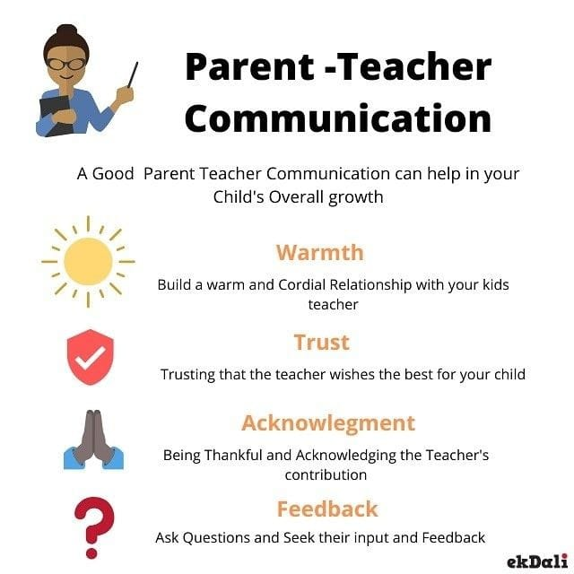

Welcome to Helpful Communication Techniques Between Families and ELP Teachers
Effective communication between teachers and families is important for helping children succeed in their education. As Early Learning Program (ELP) teachers, building strong relationships with families makes sure that children get the support they need both at school and at home. This website is here to give you helpful strategies to build trust, solve problems, and improve the overall learning experience. Whether you’re new to teaching or have a lot of experience, these techniques will help close the gap between the classroom and home, so students can grow and succeed in a positive environment.